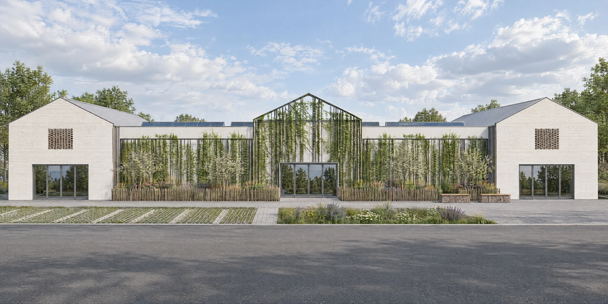
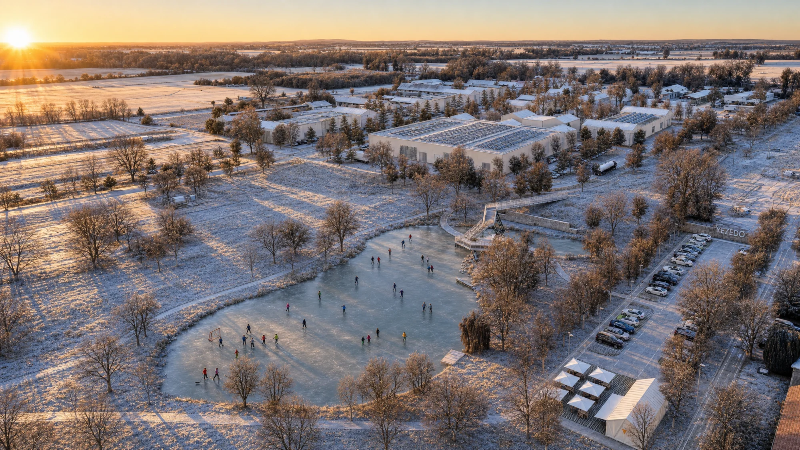

DISPOZICE NA MÍRU
Konstrukční systém i vnitřní dispozici lze přizpůsobit požadavkům zákazníka a charakteru provozu.

DevelopmentPříprava a rozvoj areálu
Prostor pro vaše podnikání v Kosticích.

O projektu
YEZEDO Development proměňuje areál bývalého zemědělského družstva v Kosticích v moderní podnikatelskou zónu. Připravujeme haly a pozemky pro výrobu, skladování i služby – místo, kde najdou zázemí místní firmy i noví podnikatelé. Propojujeme rozvoj území s potřebami budoucích uživatelů a vytváříme prostor pro dlouhodobý růst jejich podnikání.
Při návrhu jednotlivých hal klademe důraz na funkční uspořádání, efektivní využití prostoru a energetickou úspornost. Konstrukční systém i vnitřní dispozici hal lze přizpůsobit požadavkům zákazníka a charakteru jeho provozu. Součástí řešení může být také druhé nadzemní podlaží pro kanceláře a administrativní zázemí. Konkrétní podobu objektu tak lze navrhnout s ohledem na výrobní, skladovací i administrativní potřeby firmy.

Součástí rozvoje areálu jsou obslužné komunikace, parkovací plochy, technická infrastruktura i zeleň. Projekt zároveň počítá s návazností na společná energetická řešení a služby pro správu areálu, aby firmy mohly soustředit svou pozornost především na vlastní podnikání.
Od záměru k funkčnímu provozu
Konstrukční systém i vnitřní dispozici lze přizpůsobit požadavkům zákazníka a charakteru provozu.
Součástí řešení může být druhé nadzemní podlaží pro kanceláře a administrativní zázemí.
Obslužné komunikace, parkování, technická infrastruktura, zeleň a návaznost na společná energetická řešení a správu areálu.
Pozemky, haly, etapizace a koordinace rozvoje areálu.
Konstrukce, dispozice, kanceláře a zázemí podle charakteru provozu.
Doprava, parkování, technická infrastruktura a návaznost na správu areálu.
Haly a pozemky
Prohlédněte si nabídku jednotlivých hal a najděte prostor, který odpovídá vašim potřebám. Dispozici každé haly lze přizpůsobit vašemu provozu.

Příležitost ke společnému rozvoji
Přinášíme území a koncepci.
Hledáme kapitál, zkušenosti
a odpovědnost.
Hledáme investičního partnera pro rozvoj areálu i firmy pro konkrétní haly. Obchodní model a odpovědnosti budou předmětem jednání s obcí.

Od záměru k dalšímu kroku
Obor, prostorové potřeby a předpokládaný rozsah.
Provoz, dokumentace a technické návaznosti.
Obchodní model, odpovědnosti a další postup.